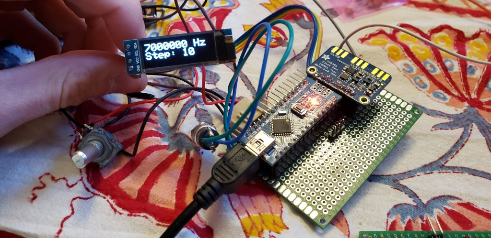
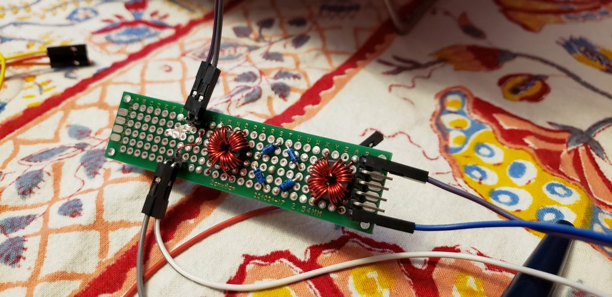

Recently I’ve taken up a new project – I am building a QRP transceiver for 40m, CW only. The intention is to have a small radio, 5 watts or so, which I can carry almost anywhere and operate easily. Also, it must be completely scratch built by me. I decided on 40m as I already have a 4SQRP Hilltopper for 20m, as well as a QCX also for 20m.
I decided on a design using an Arduino Nano(well, a clone) as the heart of it along with an Si5351 for the VFO. This section I completed first on a breadboard, and then soldered down. I wrote all of the code for this from scratch. The Si5351 produces an output between 7MHz and 7.3MHz, controlled by a rotary encoder with a variable step(10-1000Hz). The Arduino also controls TX/RX switching with the key input, and an OLED display for the frequency readout. The code for this can be found here:
The partially complete VFO/main board.
Having decided to get the receiver(direct conversion) working first, the next step was to build a mixer. I decided on a double-balanced diode ring mixer because it would provide a good level of sensitivity while also being easy to make myself. I used BAT41 diodes and FT-37-43 cores for the transformers, with 14 windings per side(or 7+7 for the tapped ones). I don’t know much about mixers, so I had to do extensive testing to get it to work. Using one of the other clock outputs on the Si5351 and an oscilloscope, I was able to get the proper output from it. I determined that I would need some filtering on it before the AF amplification stage. A 0.1uF capacitor across the output seemed to eliminate the high frequencies. It’d probably be best to make it a real low-pass filter with a choke on the line as well, though.
The completed RF mixer board.
Next, I started working on the AF amplification section. This is pretty simple, and I chose an LM386 for it. The next update will contain more information on this, as it is still in progress.
After completing the AF stage, I will work on a bandpass filter, and then a TX amplifier, and TX/RX switching. I’d also like to add a built-in iambic keyer using an ATTiny.
I did not finish this project before leaving for college. Progress so far has been success in creating a crude receiver, which has some extremely high noise from the OLED display.
During winter break I hope to finish it, and bring it for bicycle-portable use during the spring semester. I'll power it on ~8v from two 18650 batteries in series.